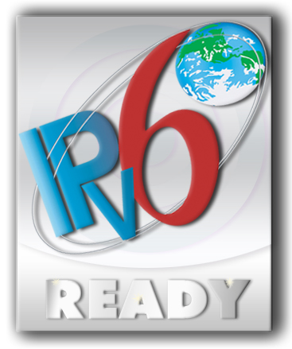

$Id: index.html,v 1.1 2005/03/08 19:02:24 suz Exp $
On March 4th 2005, we obtained the Phase-1 Logo from IPv6 Ready Logo Committee for KAME+FreeBSD5 (KAME-SNAP released on 20050124), in addition to KAME+FreeBSD4, which is announced on the newsletter last year.
Here is the list of our certificated implementations:
| Node type | Snap version | Phase-1 Logo ID |
|---|---|---|
| IPv6 host | kame-20030922-freebsd48-snap | 01-000114 |
| IPv6 host | kame-20050124-freebsd53-snap | 01-000253 |
| IPv6 router | kame-20030922-freebsd48-snap | 01-000115 |
| IPv6 router | kame-20050124-freebsd53-snap | 01-000256 |
Here is the logo we received from IPv6 forum.
